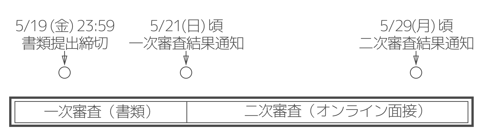

PMやその他未踏OBOGを中心とした各界で活躍するPMや、その他専門家による指導が受けられます。
各グループ50万円を上限として、開発資金の援助を行います。
必要に応じて、開発場所及び工作機材の援助を行います。
未踏ジュニアスーパークリエータに認定されると、2018年度の未踏事業への推薦を受けることができます。
対象: 2017年4月1日時点で17歳以下の個人及び、これらの年齢で構成されたグループ (最大4人)
期間: 2017年6月中旬から10月までの約5ヶ月間
6/18(日)にブースト会議を、8月末に中間合宿を、10月末に成果報告会を予定しています。
参加費: 無料（上記イベント参加の為の交通費・宿泊費も支給されます）

1次選考（書類審査）と2次選考（オンライン面接）にて選考が行われます。
こちらのテンプレートを参考にしてください。
書類応募締め切り: 2017/05/19 23:59
1次選考結果通知: 2017/05/21頃
オンライン面接期間（この中で30分ほど時間を指定させて頂きます）: 2017/05/22-28
選考結果通知: 2017/05/29頃

アプリケーションを支える言語処理系やOSなどのシステムソフトウェア開発に熱意を持って取り組んでいる方。
大学在学時からRuby向け仮想マシンYARVを開発し、2007年に「Ruby 1.9」に採用される。以降、Rubyコミッターとして、言語処理系の高速化に従事し、仮想マシンやガーベージコレクションの性能改善などを行なう。東京大学大学院情報理工学系研究科助手、助教、講師、株式会社セールスフォース・ドットコム、Heroku, Inc.を経て、クックパッドにてRubyインタプリタ開発に従事。博士（情報理工学）。未踏ユーススーパークリエータ（2004）。

どんどん新しいことにチャレンジする人。
2002年度スーパークリエータ。2006年、24歳で博士(理学)取得。2007年よりサイボウズ・ラボにて、チームワークや知的生産性を高めるソフトウェアの研究に従事。著書に「コーディングを支える技術」「word2vecによる自然言語処理」など。2014年技術経営修士取得。2015年より一般社団法人未踏の理事を兼任。2級知的財産管理技能士。

スクリプト言語やWebの特長を活かしたプロジェクト
YassLab 代表。CoderDojo Japan 代表理事。早稲田大学情報理工学科卒 (修士)。米国留学中に開発した震災対策アプリのヒットを契機に、帰国後、起業。主にアジャイル開発と教育事業、翻訳技術研究に従事。IPA認定未踏スーパークリエータ、TEDxRyukyuスピーカー。RailsチュートリアルやRailsガイドの共同発起人で、同教材を使った講義を産業技術大学院大学や筑波大学で受け持つ。

ロボット作りたいとか、コンテンツつくりたいとか、楽しくてやりがいがある事
2012年度未踏事業を修了。東京大学でロボコンサークルRoboTechに所属しメカニックを担当。東京大学工学精密工学科を卒業した後、東京大学大学院工学系研究科に進まれ、未踏人材育成事業ではWeb親和性の高い創作形態の提案と創作環境の開発というテーマでecomakiをリリース。 その後、ファナック株式会社のCNCソフトウェア研究所に勤務後、フリーランス等を経て2016年に未踏事業の紹介でプリファードネットワークスに入社。Amazon Picking Challenge、およびCeaTec展示会でロボットの開発に携わられ、2017年1月、プリファードネットワークスが開発するディープラーニングフレームワークchainerを用いた自動着色サービスPaintsChainerを公開

「コンピューターって面白い！」もしくは「コンピューターを使って何かを作りたい！」と思う人が増えるようなプロジェクト
ゲームやメディアアートを簡単に作れる C++ ライブラリ Siv3D の開発で 2013 年度スーパークリエータ認定。 早稲田大学 表現工学専攻 博士後期課程2年。早稲田大学の中高生向け情報科学教室では C++ プログラミング講座を担当。

みんな気付いてないけど、私にはメチャクチャ面白いのにな……と感じていて、あなたが人より面白がれること
プログラミングの楽しさを広めるためHackforPlayを開発。CVCK Awardで受賞したことをキッカケに石川県金沢市で起業。2015年度スーパークリエータ。様々なプログラミング教材を開発するほか、CoderDojo Kanazawaを立ち上げ、小・中学生向けの教室を開いている。

あなたがやらなければ多分誰もやらないプロジェクト
東京大学大学院にて水中ロボットを用いた水泳支援システムの研究開発を行い、2011年度スーパークリエータに認定される。MicrosoftのOfficeやMinecraft開発チームにてOffice LensやMinecraft Hour of Code Designerといった教育関連の製品のProgram Managerを務める。

1946年、富山県生まれ。1971年にNTT研究所に入所して以来、人工知能をかじったりしていたが、プログラミング言語、中でもLispとその処理系の開発にはまってしまい、通常のプログラミング言語には不自由な人となってしまった。しかし、そのせいか、プログラミング以外のことにもいろいろ首を突っ込むことになってしまった。NTT研究所のあとは、電気通信大学、東京大学、早稲田大学の教授を歴任。
未踏事業は2000年に始まってから、どんどん若い人たちを対象にするようにシフトしてきました。ITはもう大人の独占物ではありません。超若いうちからITのセンスを見出して伸ばすことが大事だと思います。そのためには大人と同じ土俵ではなく、むしろ未踏ジュニアというような枠組みの中で伸び伸びと羽を広げていけるようにするのが、ジュニア世代の本当の成長につながると思います。未踏ジュニアでは、ジュニア世代が「教わる」のではなく、良い環境の中でITの才能を自ら発芽・成長させていくことを期待しています。
運営母体はどこですか？
社団法人未踏が運営しています。プロジェクトマネージャ含め、未踏OBのボランティアベースと、社団法人未踏に支援してくださっている企業の皆様の協力で運営されています。
具体的に、どのような支援がうけられますか？
採択したプロジェクトマネージャから、1週間当たり1時間程度主にオンラインでメンタリングを受ける機会が与えられます。また、期間中に何度か全員が集まるイベント(ブースト会議/中間合宿など)を開催し、プロジェクトマネージャ以外の未踏関係者、その他有益だと思われる関係者からのフィードバックを得る機会を提供します。
期間の最後には、成果発表会として開発したものを様々な人の前でデモするチャンスもあります。
開発費用への補助はありますか？
はい。各グループ50万円を限度に、開発費用を援助させていただきます。給料といった形ではなく、あくまで開発に必要なものを購入した際の支援になりますので、ご注意ください。
情報処理推進機構が行う2017年度未踏IT人材発掘・育成事業に既に応募しています。応募資料を使いまわすことは可能ですか？
はい。応募資料はそのままアップロードしていただいて大丈夫です。
情報処理推進機構が行う2017年度未踏IT人材発掘・育成事業に既に応募していますが、採否が通知されていません。どちらにも採択された場合はどうすれば良いですか？
未踏ジュニアキャンプの開始までには未踏IT人材発掘育成事業の採択結果は通知される予定ですので、特に理由がないかぎり、未踏ジュニアキャンプのほうは辞退して頂いて問題ありません。
提案するプロジェクトは、期間内で完成する必要がありますか？
特にそういった縛りはありませんが、最後の成果報告会では最低限動作するプロトタイプをデモすることが望まれています。
どのくらいの時間を、かける必要がありますか？
基本的には、プロジェクトごとに臨機応変に対応します。仕事ではないですし、学生は勉強が本分なので、特に何時間、という考えは持っていません。
何か必要な知識やスキルはありますか？
特にこれといったものはありませんが、開発したいものについて自分で調べて、実装できる力は必須です。
既に2016年度の未踏ジュニアに採択されています。再応募は可能ですか？
はい、可能です。
応募にあたって保護者の同意は必要ですか？
親権者同意書の提出は、採択決定後に行っていただきますので、応募の時点では特に必要ありません。
もし応募して採択されなかったらどうなりますか？
応募締め切り後、1週間程度を目安に、メールにてご連絡させて頂きます。採択者の名前のみ公開されますので、採択されなかった方に関する情報は一切外部に公開されることはありません。
途中で辞退することはできますか？
はい。詳細は後日追記されます。
開発したものの権利は誰に帰属しますか？
開発者に帰属します。
未踏ジュニアスーパークリエータとはなんですか？
特に優れた成果を残したクリエータは「未踏ジュニアスーパークリエータ」として認定され、情報処理推進機構が行う2018年度未踏IT人材発掘・育成事業への推薦を受け、書類選考を通過することができます。
2016年度は、4プロジェクト6人を採択しました。

福住 仁志朗 (鈴木PM)
Voice Commanderは、声とジェスチャーで操作する新感覚チェスゲームです。 グラフィックにこだわるだけでなく、音声認識によるコマの操作、スマホに表示したマーカーを利用したジェスチャー操作等を組み合わせることで、「かっこよさ」を追求しています。 アニメ「ノーゲーム・ノーライフ」に出てきたチェスから着想を得て開発をすすめました。 それぞれのマスにはプレーヤーが音声認識の際に叫ぶための名前がついていて、テキストファイルを変更することで簡単に名前をカスタマイズすることもできます。
声による命令とジェスチャーで、プレイヤーを本物の司令官にしてしまう新感覚のコンピュータチェスを実現しました。 福住さんはプロジェクト当初から「かっこいいチェスを作る」という目標に一貫してこだわり、画像処理や音声認識、3D グラフィックスなど、目標達成に必要な技術を一つ一つ学習し、自分のものにしていきました。 チェスという伝統的な遊びを踏襲しながらも、まったく新しいプレイ体験を構築したのは、未踏的な発想力と実装力もさることながら、プロジェクト期間中に PM 陣や協力者から受けた様々な意見や提案にただ流されるのでなく、自分なりに吟味・取捨選択し、適切に開発方針を見定めていった成果だと思います。
福田 恭子 工藤 零大 (西尾PM)
スマートペンは、「勉強する時間を計測してさぼり癖をなくしたい」という思いから開発された、スマートデバイスです。 ペンのグリップ部分に取り付けられた静電容量式タッチセンサを利用することでペンを握っているかを検知し、自動で勉強時間を計測、記録します。 記録した勉強時間のログは、スマートフォンに対応アプリケーションをインストールすることで簡単に見ることができます。
「明示的な記録開始動作なしに勉強時間を計測したい」という目的のために、ペンにセンサを内蔵しBLEで通信することを提案したプロジェクトでした。共有の作業場なしで物理的なデバイスを製作する困難の中、短い開発期間でペンとして実用可能なサイズのプロトタイプを完成させました。素晴らしい成果だと思います。今後は商品化という更に高い目標を目指すそうで、きっと多くの学びと成長があることだろうと期待しています。
木村 皓子 (鵜飼PM)
VR絵本メーカーは、 VRで体験できる世界やストーリーを制作するためのスマートフォンアプリケーションです。 物語の世界に入ることができる！大好きなあの人とデートができる！憧れのアーティストのライブにも行けちゃう！誰でも簡単にスマホで観れるVR絵本をつくれます。 ユーザーは背景となる360度画像を選択し、キャラクターや吹き出し、さらに効果音、遷移エフェクトを選択してVR絵本にします。
ユーザーががVRコンテンツを作れるアプリを作る、という非常に挑戦的なテーマに挑み、実際に自分が体験したかった「銀河鉄道」の様なVRコンテンツが製作できるものに仕上げたのは大変素晴らしいです。 今後はアプリのリリースに向けて、細かいバグ修正やコンテンツの共有機能を実装し、さらにその世界を広げていくことを強く期待します。
お返事が遅くなる場合もありますが、ご了承ください。